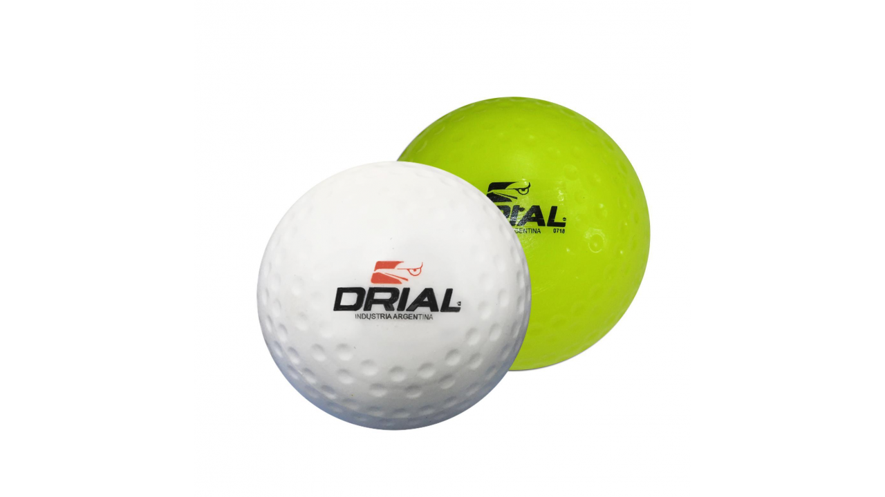
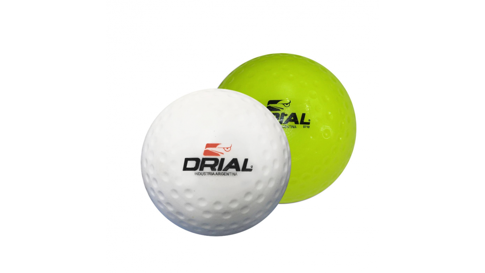

Los Elementos Básicos para jugar al Hockey
El hockey sobre cesped es un deporte muy popular alrededor del mundo. Se juega con 11 once jugadores por equipo, y con una serie de elementos: palo, bocha y protecciones.
El palo es el elemento caracteristico de este deporte. Historicamente, se hacian de madera, pero con el paso del tiempo y los avances tecnologicos, los palos de hockey actuales estan fabricados con fibras de carbono y demás elementos sintéticos. Los palos tienen que cumplir con ciertas caracteristicas estipuladas por la Federacion internacional de hockey, y varían en su peso, largo, curvatura y composición.
 

La bocha es como se denomina a la pelota utilizada en el juego. Hay dos tipos de bochas: Lisas o punteadas, que son para utilizar en distintos tipos de cesped sintético. Como dato de color, las primeras bochas se fabricaban con marfil, para luego pasar al corcho, y actualmente, de plástico.

Debido a las altas velocidades que puede alcanzar una bocha, las protecciones son muy necesarias en el deporte. Las dos protecciones obligatorias para los jugadores son las canilleras y el protector bucal. Luego, para la jugada de corner corto, es recomendable utilizar protecciones adicionales -rodilleras, guantes y máscaras- para evitar fuertes golpes.


Por ultimo, hay que destacar al arquero, el unico jugador que puede tocar la bocha con cualquier parte del cuerpo. Por lo peligrosos que suelen ser los golpes de la bocha, los arqueros estan cubiertos casi por completo por protecciones. Los llamados "pads" de arquero, consisten en protecciones para los pies, piernas, pecho y guantes especiales. A lo que se suman protectores en los codos, cintura y el casco. Por ultimo, los arqueros tambien cuentan con un palo, que suele ser mas recto, firme y corto. Y de yapa...quién mejor para demostrar cómo son las protecciones, que un profesional como Quico Cortés!